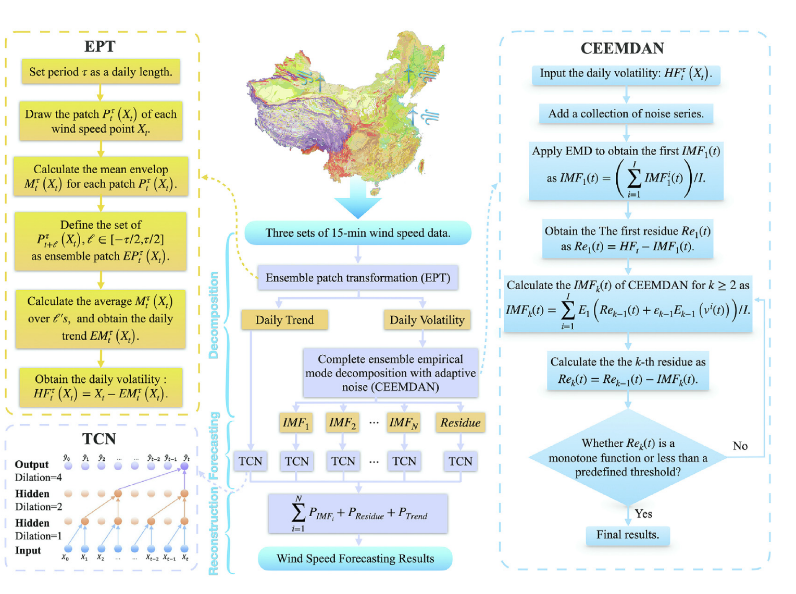

[PINKOCTO] 면담
23-07-17
- 실험해볼것 (모형, 필터/lag, 에폭 변화하여서) 50번정도..
- 에폭이 적을수록 우리가 잘맞았음.
- 필터나 lag도 단순할수록 괜찮았음
- lag은 24를 넘길 필요는 없음.
- 필터는 64이상은 필요없는듯
- quarto 팁
quarto preview --host 210.117.173.182 --no-browser- 파라메트릭 vs 넌파 vs 세미
- 비트시그널
- 발표자료 + 페이퍼작업
- 레퍼런스정리
- GNN -> GCN / RGNN -> STGCN, ST-GCN
23-07-20
- 라마: https://www.youtube.com/watch?v=OZbarkziC14
- 저널 vs 학회:
- 원래개념: SCIE (~10) >>>>>> SCIE (10~50) >> SCIE(50~) >>>>>> KCI >> 컨퍼런스
- AI분야 한정: SCIE (~10), 일부top컨퍼런스 (NIPS, AAAI, ICML, ICLR) >>>>>> SCIE (10~50) >> SCIE(50~) >>>>>> KCI >> 컨퍼런스
- 오타발견시알려주세요
23-08-14
논문쓰는 방법
1. introduction = motivating ex (원래 반반)
- motivating ex 로 시작할수도 있고 –> 방법론에 강점이 있을때
- solar enery에 대한 개론으로 시작 –> 데이터가 자신있을 경우
- 담백하게 (1) goal (2) method (3) contribution –> 이론적인 측면에 자신이 있을때 꼭 들어가야 하는 것
- 구성 // Graphical abstract
- 기존방법과 차이점 (*)

Li, Dan, Fuxin Jiang, Min Chen, and Tao Qian. 2022. “Multi-Step-Ahead Wind Speed Forecasting Based on a Hybrid Decomposition Method and Temporal Convolutional Networks.” Energy 238: 121981.
2. review existing methods (원래 지윤학생, 수틀리면 내가)
- RGCN 까지 이어지는 연구흐름을 간략하게 소개
3. proposed method (원래 지윤학생이 해야하는데, 안되면 내가)
- 우리가 제안하는 방법이 기존과 무엇이 다르냐?
- 수식, 알고리즘, 이론적 백그라운드
4. simulation study (연구의 꽃) - beat signal - priodic signal * low-freq amplitude signal 꼴의 신호의 분해 - 시뮬레이션 데이터를 고안 + 결과를 입증
5. real-data analysis (지윤학생이 거의다 해야함) - 일사량자료 분석 결과 - 우리가 제인한방법 + 기존의 방법들 -> 퍼포먼스 비교 - 데이터설명 - 데이터는 어디에서 얻었는지, 언제부터 언제까지인지, 데이터의 특징 (주기성을 가진다. 0인 값이 많다) - 그림을 보여줘야함
6. conclusion & future works & limitations & 어디에 활용
- 결론: 좋은 분석이었다..
- 한계: 어떠한 점에 한계가 있다. -> 향후연구: 향후에는 어떤연구로 발전할 것이다.. (다른변수를 고려해서 할 예정이다)
- 활용: 주기성을 가진 어떠한 자료도 우리의 방법을 사용하면 잘 예측할수있어요..